BLDC Motor: Design, Fabrication & Validation
A custom in-runner brushless DC motor designed from electromagnetic requirements through 3D CAD modeling, component fabrication, and end-to-end performance testing.
Project Specifications
| Role | Sole designer: motor design calculations and SolidWorks CAD modeling |
|---|---|
| Course | ECE 3332a: Electric Machines Design, Western University |
| Timeline | Fall 2024 (4-month academic project) |
| Team Size | 4 engineering students |
| Target Power | 33 W (revised: 26 W after wire gauge constraint) |
| Target Torque | 0.45 N·m (revised: 0.44 N·m) |
| Target Speed | 716 RPM (revised: 507.85 RPM) |
| Operating Voltage | 13 V |
| Operating Current | 2 A |
| Configuration | 14-pole / 12-slot in-runner |
| Magnet Grade | N52 Neodymium |
| Tools | SolidWorks, 3D printing, hand tools, ESC module, oscilloscope |
Problem & Objective
Electric machines are foundational to modern industry, powering everything from consumer electronics to electric vehicles. The objective of this project was to design and build a complete BLDC motor from first principles: selecting pole/slot counts, calculating winding parameters, modeling the geometry in CAD, fabricating components, and validating performance against design targets.
Brushed DC motors suffer from mechanical wear (commutator/brushes), limited efficiency, and thermal constraints. BLDC motors eliminate these issues through electronic commutation, enabling higher power density, longer service life, and better thermal performance, but introduce design complexity in the stator windings, rotor magnets, and control electronics.
Design Process
Motor Type Selection
A comparison was made between brushed and brushless DC motors, with BLDC selected for its superior efficiency, power density, and lack of mechanical commutator wear. Within BLDC types, three topologies were evaluated:
- In-runner: rotor spins inside the stator: higher RPM, lower torque, rugged construction. Selected for this project.
- Out-runner: rotor housing rotates outside: higher torque, lower RPM, more complex assembly. Discarded due to project constraints.
- Axial flux (disc): disk-shaped topology: compact but difficult to manufacture in-house. Discarded.
Pole / Slot Selection
Cogging torque, the pulsating torque caused by permanent magnet alignment with stator slots, is a critical performance metric. A 14-pole / 12-slot configuration was chosen following standard design guidelines to balance cogging minimization with manufacturability. Higher pole counts increase torque but require more complex winding; lower counts are easier to build but produce more cogging.
Magnetic Circuit Design
Torque is produced by the interaction of permanent magnets on the rotor and the magnetic field generated by stator windings. The design process began with back-EMF and torque equations to derive the required turns per coil, wire gauge, and slot fill factor. N52 neodymium magnets were selected for their high remanence (magnetic flux density residual) and coercivity (resistance to demagnetisation).
The winding layout was designed as a distributed, overlapping winding across all 12 slots. Trapezoidal (120° square-wave) commutation was chosen over sinusoidal, matching the BLDC controller (ESC) selected for testing.
Wire Gauge Constraint
A significant constraint emerged in the lab: only two wire gauges were available. This required recalculating the design to meet target performance with the constrained materials. The revised design achieved 0.44 N·m at 507.85 RPM at 13 V / 2 A, slightly below the original target but still representing a functional, practical motor.
SolidWorks Modeling
The stator and rotor were fully modeled in SolidWorks. Manufacturing drawings were generated from the 3D models, specifying tolerances, surface finishes, and assembly fits. The design was verified for magnetic clearance (air gap between rotor and stator) and mechanical clearance between the shaft and bearings.
Revised Design Point
The initial design target was 33 W, 0.45 N·m, and 716 RPM. Material availability changed the achievable operating point: only two winding-wire gauges were available, and the larger gauge limited the winding current to approximately 2 to 2.35 A. The design was therefore recalculated around 13 V and 2 A, giving a revised target of 26 W, 0.44 N·m, and 507.85 RPM.
This constraint affected the winding choice and the expected speed, torque, and power together. It was treated as a design revision rather than presenting the original values as measured performance.
Final Mechanical Design & Drive Interface
The final assembly used a 3D-printed outer stator, an inner rotor with the magnet set and shaft, and a distributed winding terminated as three motor phases. An external ESC supplied the electronic commutation during testing; there was no custom motor-control PCB in this project. The mechanical design used a nominal 1.5 mm air gap, so shaft alignment and the squareness of the printed stator base were important to prevent rotor contact.
Testing was performed by connecting the three phase wires to the ESC and commanding speed with a potentiometer. The motor nearly spun, but friction from the tilted shaft and rotor-stator contact prevented a valid torque or speed measurement. The missing upper bearing in the later assembly also left the shaft with one effective support point, making alignment more sensitive.
Challenges & Lessons Learned
- Misinterpretation of in-runner vs. out-runner geometry: The SolidWorks model was initially built with the stator and rotor positions swapped, causing a critical assembly error discovered during testing. This required a full geometry redesign, a costly lesson in verifying design assumptions against the physical meaning of each part before manufacturing.
- Shaft tilt from 3D printing tolerances: The rotor shaft, printed on a desktop FDM 3D printer, exhibited slight angular deviation from the rotational axis. This caused the rotor to contact the stator at one point in its rotation, a friction source that prevented free spinning and complicated the ESC testing results.
- Limited wire gauge availability: Only two gauges were available in the lab, forcing a redesign of the winding strategy and recalculation of all magnetic circuit parameters. The revised specs represent what was achievable with available materials.
- ESC integration challenge: Connecting the motor to an off-the-shelf ESC module revealed the importance of verifying commutation timing and sensor alignment before applying power. The test procedure was refined iteratively after each failure mode was characterised.
Key takeaway: design assumptions must be verified at each stage. Waiting to test the assembled system before checking individual component geometry and material properties led to a cascade of late-stage redesigns.
Results & Validation
Performance was validated using an ESC module at increasing voltage steps. The motor produced measurable torque, but the combination of shaft tilt and the winding redesign meant the final output fell below the original specification. The ESC was able to spin the motor, confirming that commutation logic was correct, but the friction issue prevented accurate torque characterisation.
The test results confirmed that with improved shaft machining and a wider range of wire gauges, the design calculations would yield the target performance. The electromagnetic design itself was sound; execution was limited by manufacturing constraints.
Design Figures
The following figures were extracted from the project report. Click any image to enlarge.
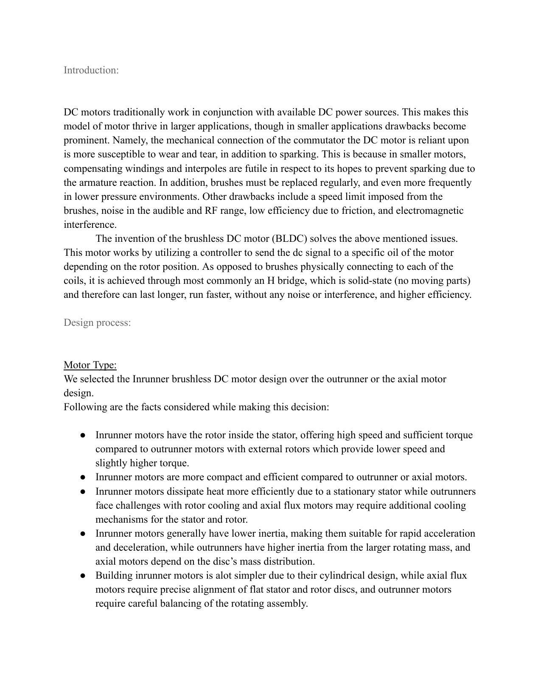
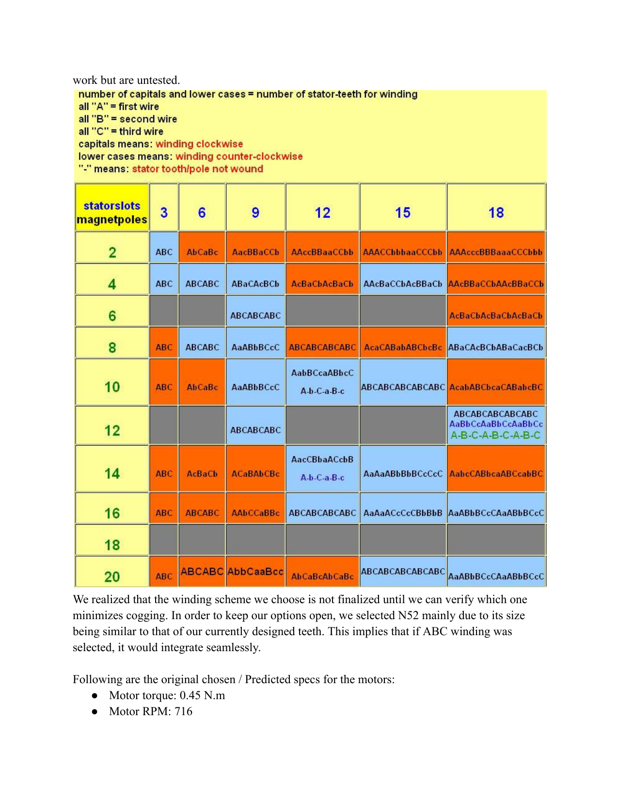
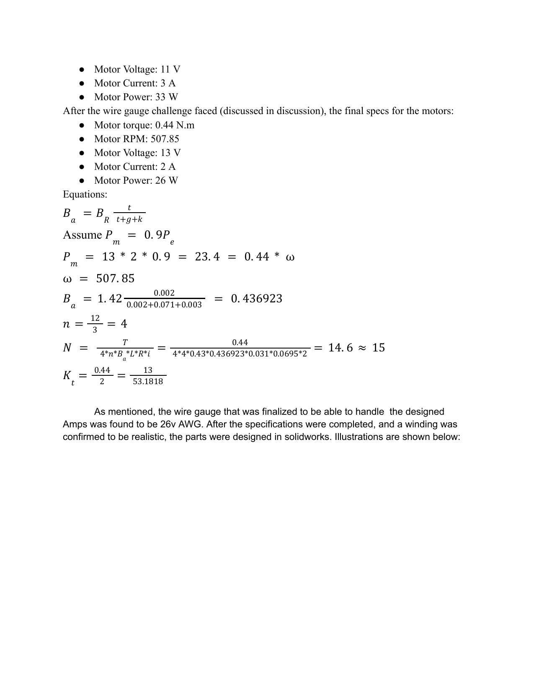
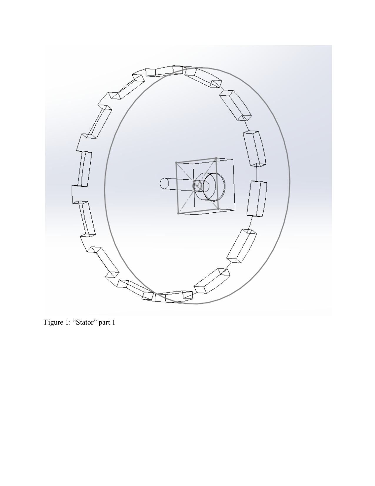
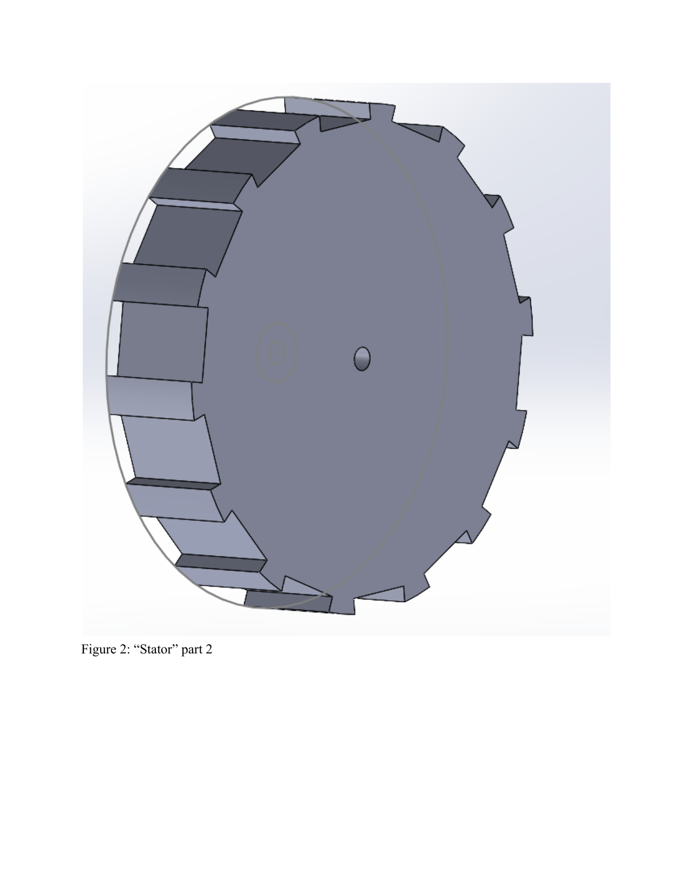
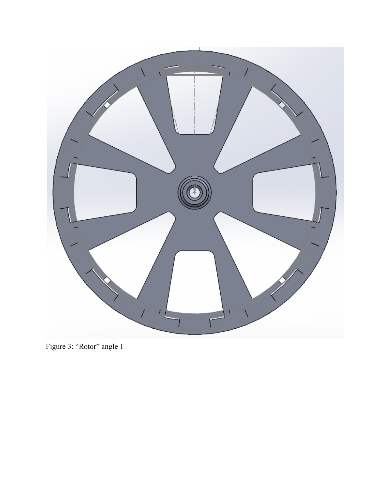
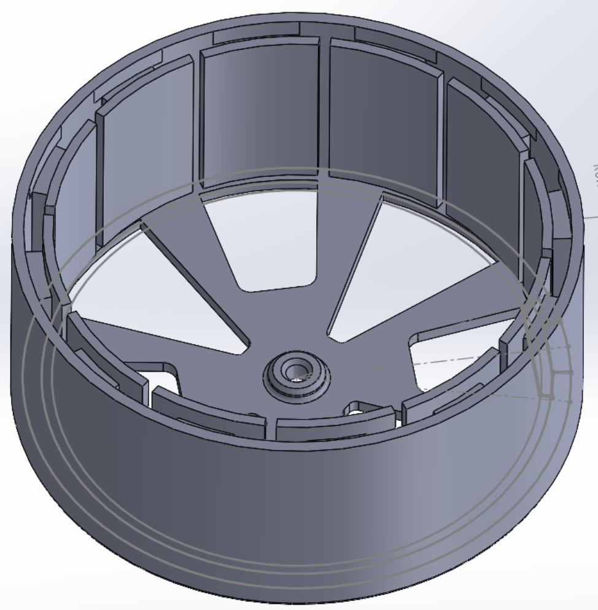
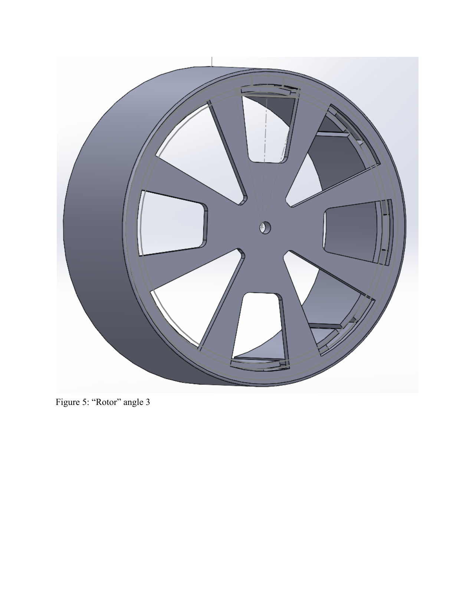
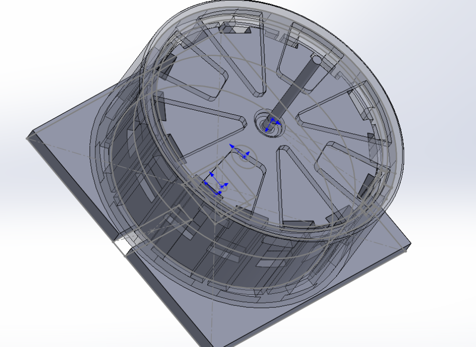
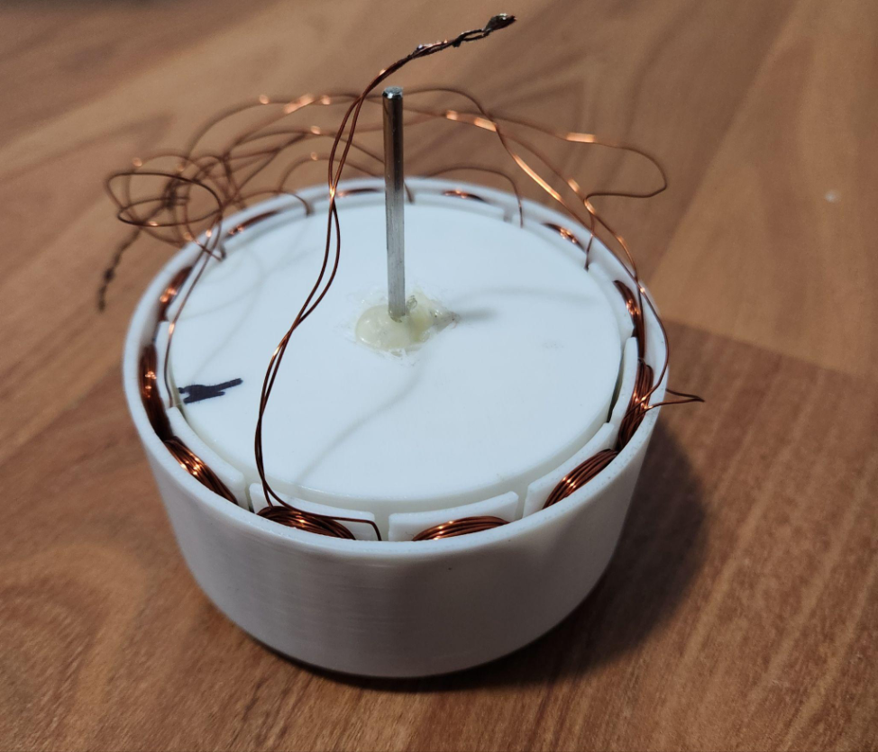
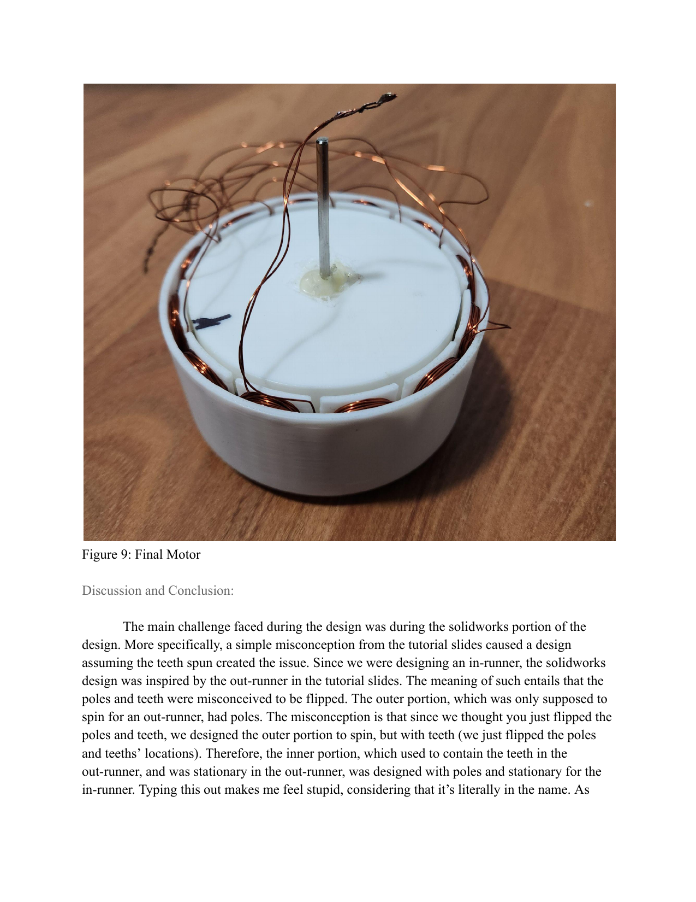
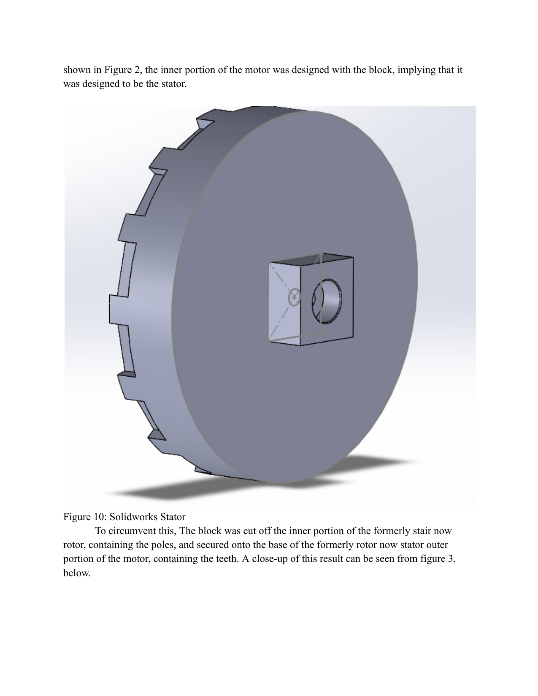
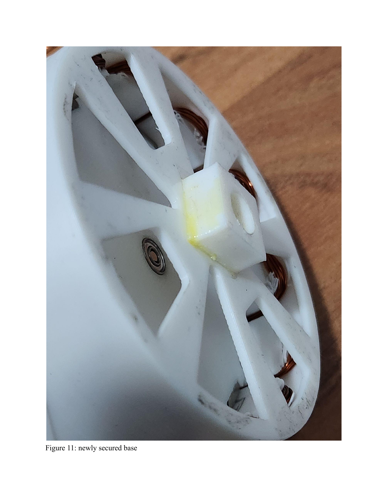